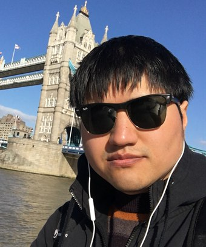

Fan Shen
shenfan@mail.sysu.edu.cnGitHubORCID
I work on systems modelling and simulation, with a focus on component-based dynamical modelling and the behaviour of the whole system once its component models are joined. My current work turns published findings on individual health and behaviour into models anyone can run, simulate and check, because in this field such findings rarely become runnable models.
Before this I spent ten years on aircraft and spacecraft. At Queen's University Belfast I worked with Rolls-Royce on whole-engine structural design, where decisions rest on simulations that cannot be fully tested. My doctoral work at Harbin Institute of Technology modelled the dynamics and control of flexible solar sails.

Selected projects
Life Matters
An open framework that turns published health and behavioural findings into runnable, composable models. Each model names its sources, and an engine simulates the models and searches for the trade-offs when goals conflict.
Built on Life Matters
Two browser games whose characters live by the Life Matters models: one about looking after the people at home, one about a time-travel agency that sends its staff to turning points in history. For entertainment only.
Solar sails
Dynamics and control of flexible solar sails, from my doctoral work to current papers with Jiafu Liu. The orbital physics is also playable as a racing game.